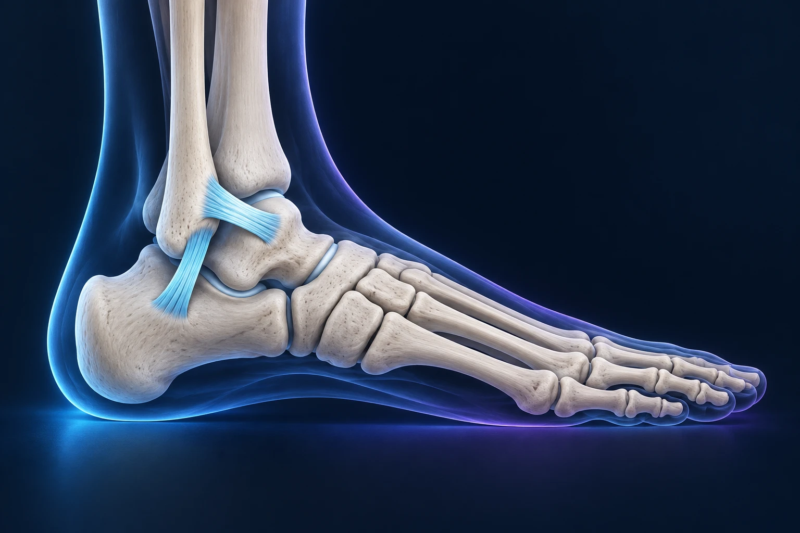

Une entorse de cheville qui ne fait plus mal est-elle vraiment guérie ?

La disparition de la douleur est un bon signe, mais elle ne suffit pas toujours pour reprendre le sport en sécurité. Après une entorse, la mobilité, la force et le contrôle de l’équilibre peuvent rester diminués. Une prise en charge adaptée et une reprise progressive aident à limiter les récidives et l’installation d’une instabilité.
Que se passe-t-il lors d’une entorse ?
Une entorse correspond à une lésion d’un ou plusieurs ligaments. À la cheville, elle touche fréquemment les ligaments situés sur le côté externe, après une torsion du pied. La gravité varie, et d’autres structures peuvent être atteintes lors du même traumatisme.
La cheville fonctionne comme un système d’équilibre qui associe des attaches, des muscles et des informations sensitives. Les ligaments participent aux attaches, tandis que le contrôle musculaire aide à réagir lorsque le sol change. Après une entorse, le problème ne se limite donc pas au ligament douloureux. Assurance Maladie, reconnaître une entorse de cheville.
Une radiographie normale ne signifie pas nécessairement que tout est rétabli. Elle permet surtout de rechercher certaines lésions osseuses lorsqu’elle est indiquée. L’examen clinique reste essentiel pour apprécier le traumatisme et organiser la suite.
Quand faut-il consulter après la torsion ?
Une cheville douloureuse et gonflée après une torsion mérite une évaluation, idéalement dans les vingt-quatre heures. Le professionnel recherche notamment une fracture, une atteinte ligamentaire plus complexe ou une autre lésion nécessitant une prise en charge particulière. HAS, recommandations de 2025 sur l’entorse de cheville.
Consultez rapidement si l’appui est impossible, si la douleur est importante ou si une zone osseuse est très sensible. Une déformation, un pied froid, une perte de sensibilité ou une plaie associée imposent une évaluation urgente. Il ne faut pas tester plusieurs fois la cheville en courant pour savoir si la blessure est « sérieuse ».
En attendant l’examen, interrompez l’activité en cours et protégez la cheville. Le froid peut aider à soulager, avec un tissu entre la peau et la poche froide. Une compression ne doit pas provoquer d’engourdissement ni comprimer excessivement. Assurance Maladie, premiers gestes et consultation.
Pourquoi la rééducation est-elle importante ?
Le traitement dépend de la gravité. Une protection par orthèse peut être indiquée, parfois une immobilisation, avec des consignes d’appui adaptées. La rééducation accompagne la récupération ; son contenu et son rythme ne sont pas identiques pour toutes les entorses. Assurance Maladie, consultation et traitement.
Le travail porte sur la mobilité, la force, l’équilibre et les tâches nécessaires à vos activités. Marcher en ligne droite dans un couloir demande moins de contrôle qu’une réception de saut ou qu’un changement de direction. Une progression permet de préparer ces situations sans les réintroduire toutes en même temps.
Vous pouvez demander au kinésithérapeute ce que chaque exercice cherche à améliorer. Cette compréhension aide à poursuivre le programme quand la douleur a déjà nettement diminué. Elle évite aussi de considérer l’absence de douleur au repos comme le seul objectif de la prise en charge.
Comment sait-on que l’on peut reprendre le sport ?
La décision tient compte de plusieurs éléments : la douleur pendant et après l’effort, les amplitudes, la force, l’équilibre, la confiance dans la cheville et la capacité à réaliser les gestes du sport. Des exercices ou des tests fonctionnels permettent d’observer ces capacités. Le temps écoulé depuis la blessure ne suffit pas.
La reprise peut distinguer une activité individuelle contrôlée, un entraînement adapté et un retour complet. Cette organisation est particulièrement utile pour les sports collectifs, où vous ne maîtrisez pas tous les changements de direction ni les contacts. Une chevillère peut être discutée, mais elle ne remplace pas la récupération des capacités nécessaires. Assurance Maladie, évolution et reprise des activités.
Dans votre programme, précisez ce que signifie « reprendre ». Refaire quelques exercices techniques et jouer un match entier sont deux objectifs différents. Si vous préparez une randonnée dans l’Hérault, ajoutez progressivement la durée, les descentes et les terrains irréguliers, plutôt que de reprendre directement une sortie longue.
Que faire si la cheville continue à se dérober ?
Des épisodes répétés de dérobement, une appréhension persistante ou de nouvelles entorses justifient un bilan. Une douleur qui dure peut également conduire à rechercher une lésion associée. Il n’est pas utile d’attendre des années en supposant que votre cheville est simplement devenue « faible ».
Le bilan distingue notamment une laxité ligamentaire, c’est-à-dire une détente anormale des attaches, et des difficultés de contrôle fonctionnel. Ces éléments peuvent se combiner. L’examen et, si nécessaire, l’imagerie servent à comprendre ce qui manque à la stabilité.
Une chirurgie de stabilisation peut être discutée lorsque l’instabilité reste gênante malgré une rééducation adaptée. Il peut s’agir d’une réparation ou d’une reconstruction ligamentaire, selon la situation. Les informations du Dr François Lozach sur le pied et la cheville présentent les prises en charge possibles.
Si une opération est proposée, que faut-il anticiper ?
La chirurgie ne dispense pas de rééducation. La protection initiale, la reprise de l’appui et le retour au sport dépendent de la technique et des éventuels gestes associés. Les risques possibles comprennent notamment l’infection, les troubles sensitifs, la raideur, la persistance d’une douleur ou d’une instabilité.
Préparez votre consultation avec le nombre approximatif d’entorses, les circonstances des dérobements et les soins déjà réalisés. Apportez les anciens examens. Précisez si votre priorité est de marcher sur terrain irrégulier, de travailler debout ou de reprendre un sport de pivot.
Vous pouvez prendre rendez-vous avec le Dr François Lozach à Sète, pour évaluer une douleur persistante ou une cheville instable. Retrouver confiance repose sur des capacités vérifiées et un programme adapté à votre activité.
Ces conseils sont d’ordre général et ne remplacent pas un avis médical personnalisé.